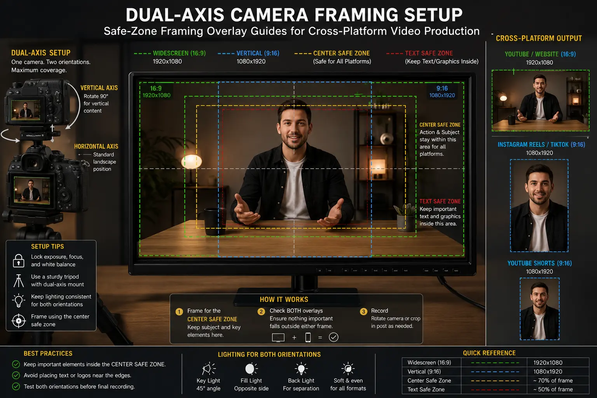
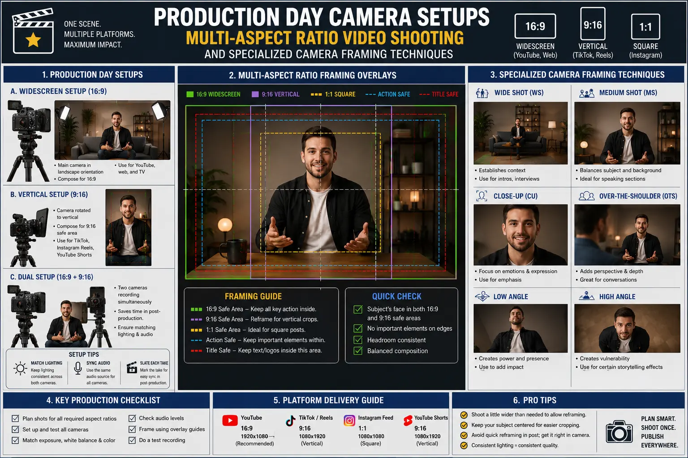

How to Light and Frame Camera Shots for Widescreen and Vertical Feeds Simultaneously
The Multi-Format Dilemma: Why Single-Ratio Video Production Is Obsolete
Modern commercial directors and digital marketers face an unprecedented visual challenge on set. A decade ago, commercial video shoots were planned around a single master aspect ratio: 16:9 widescreen for high-definition television, YouTube desktop players, and corporate web portals. Today, brand campaigns must deploy high-performing Digital Ad Campaign Visual Assets across a fragmented ecosystem of aspect ratios concurrently. The same product commercial or executive address must command attention in 16:9 horizontal on connected TVs (CTV), 9:16 vertical on Instagram Reels, TikTok, and YouTube Shorts, and 4:5 or 1:1 square aspect ratios on Meta Mobile Newsfeeds and LinkedIn.
Historically, production teams attempted to solve this multi-channel demand using one of two costly workarounds: double-shooting every scene—first in horizontal orientation and then repeating the performance in vertical—or shooting standard widescreen and relying on aggressive, destructive post-production cropping. Double-shooting inflates set time by 50% to 100%, exhausting talent and draining budget allocations. Conversely, unplanned center-cropping leads to severely compromised visuals: decapitated talent headroom, chopped product labels, awkward eyelines, and unbalanced negative space that signal amateur production values to discerning consumers.
To eliminate these operational bottlenecks, leading commercial studios have adopted Cross-Platform Video Production methodology. By combining specialized optical choices, calibrated sensor readouts, Dual-Axis Camera Framing, and broad-spectrum spatial lighting design, cinematographers can capture pristine visual master assets that serve both 16:9 widescreen cinema and 9:16 vertical social feeds in a single camera take.
Geometric Fundamentals of Dual-Axis Camera Framing
The foundational technique powering single-take multi-format capture is Dual-Axis Camera Framing. Traditional camera composition evaluates visual elements along a single horizontal axis (such as rule-of-thirds grid lines across a 1.78:1 widescreen rectangle). In contrast, dual-axis framing evaluates two intersecting geometric spaces simultaneously: the full horizontal canvas (16:9 widescreen) and the nested vertical slice (9:16 vertical portrait).
When Composing for Reels and widescreen simultaneously, camera operators must understand the exact spatial relationship between these two aspect ratios. In a 3840x2160 (4K UHD) horizontal frame, a 9:16 vertical crop centered within the frame occupies a width of exactly 1215 pixels. This central corridor—accounting for roughly 31.6% of the total horizontal width—is designated as the "Common Safe Zone."
To execute successful multi-aspect ratio video shooting, all critical narrative elements must reside within this central 9:16 vertical corridor. Key focal points—including the spokesperson's face, primary product packaging, hero actions, and headline text graphic zones—must be framed inside the center box. Simultaneously, the outer left and right flanks of the 16:9 canvas are filled with rich environmental context, atmospheric background lighting, secondary set dressing, or supporting brand props. On a horizontal widescreen display, these outer flanks create an expansive, cinematic atmosphere; when sliced for vertical feeds, the outer flanks are cleanly truncated while the core focal subject remains impeccably centered.
Refining your camera framing techniques also involves adjusting talent eyelines and vertical headroom. In social media feeds, platform user interfaces (UIs) overlay interactive elements directly on top of the video container—such as account handles, caption text boxes, audio track tickers, and like/comment buttons along the lower third and right margin. To prevent talent or products from being obstructed by social UI elements, cinematographers position eyelines in the upper-middle third of the common safe zone, keeping the lower third clean for post-production graphic overlays and platform UI elements.
On-Set Workflow: Safe-Zone Framing Overlay Guides and Camera Setups
Executing dual-axis composition live on set without visual aids is nearly impossible even for seasoned operators. Production teams rely on real-time monitoring tools called safe-zone framing overlay guides. These digital grid lines are programmed into camera electronic viewfinders (EVFs), wireless video transmitters (such as Teradek or Hollyland systems), and client/director monitors (such as SmallHD or Atomos recording monitors).
During production day camera setups, the First Assistant Camera (1st AC) or Digital Imaging Technician (DIT) configures customized framing boxes on all monitors. A translucent shaded box or bold frame line outlines the 9:16 vertical boundary inside the 16:9 camera feed, alongside a secondary 4:5 feed boundary line. This enables the director, cinematographer, and camera operator to verify in real time that headroom, side clearances, and hand movements stay within safe boundaries during every active take.
Furthermore, camera sensor configuration plays a pivotal role in preserving image fidelity across formats. Modern cinema cameras (such as the ARRI ALEXA Mini LF, RED V-Raptor, Sony FX6/FX9, or Blackmagic URSA Mini Pro) offer full-frame Open Gate sensor modes (3:2 or 4:3 aspect ratios). Shooting Open Gate utilizes the entire vertical height of the camera sensor rather than cropping to 16:9 in-camera. This provides valuable extra vertical resolution (such as 4.6K or 6K vertical pixels), offering editorial teams immense latitude in post-production to micro-adjust vertical tilt, pan tracking, or digital reframing without suffering resolution loss on 4K vertical exports.
50% Production Time Savings
Eliminate redundant secondary takes by capturing widescreen commercial masters and vertical social cuts in a single camera pass during live production day setups.
High-Resolution Cross-Platform Assets
Open Gate sensor recording ensures maximum pixel density, producing razor-sharp 4K 16:9 widescreen masters and uncropped 4K 9:16 vertical cuts for all ad placements.
Performance & Lighting Consistency
Ensure identical talent energy, vocal pacing, and cinematic lighting setups across YouTube, Meta, TikTok, and CTV placements for complete brand harmony.
Frictionless Post-Production Delivery
Pre-planned safe-zone framing overlays allow editorial teams to execute automated batch exports across 16:9, 9:16, and 4:5 ratios with zero manual re-framing delays.

Lighting Design Principles for Simultaneous Multi-Aspect Ratio Capture
While framing establishes spatial placement, lighting determines the emotional atmosphere and visual salience of your footage. Lighting a set for Cross-Platform Video Production introduces distinct spatial challenges compared to single-format commercial shoots. Horizontal 16:9 framing captures wide lateral space, requiring key and fill lights to throw illumination across a broad horizontal plane. Conversely, vertical 9:16 framing captures a taller vertical angle of view, exposing significantly more ceiling headroom and studio floor area.
To master multi-aspect ratio video shooting, Director of Photography (DPs) must reconfigure traditional lighting setups around three core principles:
- Broad-Volume Key and Fill Sources: Narrow spotlighting or tight beauty dishes that work well in horizontal close-ups often fail in vertical framing because talent movement quickly carries them out of the beam. DPs use large, soft diffusion sources—such as 8x8 or 12x12 grid cloth frames lit by powerful LED fixtures (e.g., Aputure 1200d or ARRI SkyPanel S60)—placed closer to the central axis. This creates a wide, wrap-around light quality that illuminates the subject consistently whether viewed in wide horizontal or tall vertical crops.
- Overhead Rim and Hair Illumination: On small smartphone screens, subjects can easily blend into dark backgrounds if contrast is inadequate. Positioning high-angle overhead rim lights or dedicated hair lights creates a crisp edge highlight along talent shoulders and hair. This separation enhances 3D pop and visual salience, ensuring immediate subject recognition even when viewed on high-speed mobile feeds.
- Vertical Luminance Management & Floor Spill: Because vertical 9:16 framing exposes more studio floor space, uncontrolled light spill can create unsightly hot spots or distracting reflections on polished set floors. DPs employ honeycomb grids, egg crates, and black solid flags positioned just outside the 16:9 camera boundaries to shape the light cone, keeping studio floors and ceiling rigging in deep shadow while keeping the central safe zone perfectly illuminated.
- Color Temperature and Background Practicals: Incorporating warm practical lamps or ambient LED accent tubes (such as Astera Titan tubes) in the outer background adds visual texture for widescreen viewing. When shooting with Dual-Axis Camera Framing, DPs ensure that at least one ambient background light falls within the central vertical corridor to maintain background depth in vertical social crops.
Horizontal Widescreen (16:9)
- Target Outlets: YouTube Desktop/CTV, Website Heroes, Connected TV, Cinema Pre-Roll
- Composition Focus: Full contextual narrative with wide background scenery and lateral movement
- Key Advantage: Delivers immersive, cinematic visual experience with high production value
Vertical Social Feeds (9:16)
- Target Outlets: Instagram Reels, TikTok, YouTube Shorts, Meta Stories
- Composition Focus: Central vertical safe zone with eyelines in top-middle third
- Key Advantage: Fullscreen mobile real estate that stops the thumb and boosts CTR
Feed & Desktop Hybrids (4:5 / 1:1)
- Target Outlets: Meta Mobile Newsfeed, LinkedIn Video Ads, E-Commerce Product Pages
- Composition Focus: Mid-width container retaining primary subject and secondary props
- Key Advantage: Optimal feed square footage on desktop and tablet newsfeeds

Lens Selection and Camera Rigging Strategies
Optical choices heavily influence how effectively a single take translates across multiple aspect ratios. Selecting the wrong focal length can cause severe spherical distortion when subject faces are cropped into vertical frames.
When executing production day camera setups designed for dual-axis delivery, focal length selection requires strategic balance. Ultra-wide lenses (such as 18mm or 21mm on full-frame sensors) provide expansive horizontal landscapes but introduce optical stretching near the frame edges. If talent steps slightly off-center in a vertical crop, wide-angle edge distortion can unflatteringly warp body proportions. Conversely, telephoto lenses (such as 85mm or 105mm) compress background depth effectively but restrict the horizontal field of view, reducing background context in widescreen 16:9.
The sweet spot for Composing for Reels and widescreen simultaneously is medium focal length lenses—specifically 35mm, 40mm, and 50mm spherical prime lenses on full-frame sensors (or 24mm to 35mm on Super35 sensors). These focal lengths deliver a natural field of view that mirrors human perception, minimizing barrel distortion while offering sufficient background separation and spatial breathing room for both horizontal and vertical extractions.
Additionally, camera rigging must accommodate dynamic camera movement. When using gimbals (such as DJI Ronin 2 or RS4 Pro), camera sliders, or Steadicam rigs, camera operators must practice specialized camera framing techniques. Operators maintain steady horizon levels and avoid rapid pan swings that might push the primary subject outside the central vertical safe zone. Utilizing wireless follow-focus systems paired with monitor overlay guides ensures focus pullers keep razor-sharp focus on talent eyes throughout multi-axis tracking shots.
Post-Production Slicing and Multi-Ratio Asset Optimization
Capturing footage with safe-zone framing overlay guides transforms post-production from a stressful re-editing ordeal into a streamlined, high-speed assembly line. In non-linear editing software such as DaVinci Resolve Studio or Adobe Premiere Pro, master project timelines are structured around multi-format templates.
The post-production workflow for high-performing Digital Ad Campaign Visual Assets follows a structured process:
- Master Widescreen Assembly: Editors assemble the primary 16:9 widescreen timeline, color grading the Open Gate RAW or Log footage to establish brand color science and tonal depth.
- Automated & Manual Vertical Slicing: Using timeline duplication, a 9:16 vertical sequence (1080x1920 or 2160x3840) is created. Because the cinematographer adhered to Dual-Axis Camera Framing on set, the central crop automatically aligns with the main subject in 95% of takes. For dynamic movement shots, AI-assisted tools like Premiere Pro's Auto Reframe or DaVinci Resolve's Smart Reframe track the subject smoothly across the frame without requiring tedious manual keyframing.
- Platform-Safe Graphic Design: On-screen motion graphics, lower thirds, brand logos, and dynamic subtitle captions are rendered independently for each aspect ratio. In vertical 9:16 exports, text overlays are kept strictly within the central 80% vertical height to avoid overlap with social platform UI elements (such as TikTok shop buttons, Instagram audio bars, or YouTube Shorts subscribe overlays).
- Multi-Format Master Exporting: High-bitrate master files (ProRes 422 HQ or H.265 MP4) are exported for 16:9 YouTube/CTV ads, 9:16 Reels/TikTok ads, and 4:5 Meta Feed placements. Each export maintains native resolution, vibrant color accuracy, and crystal-clear audio mix specs.
Conclusion
Mastering how to light and frame camera shots for widescreen and vertical feeds simultaneously is no longer an optional luxury—it is an indispensable core competency for modern commercial video production and digital advertising campaigns. By combining Dual-Axis Camera Framing, Cross-Platform Video Production principles, safe-zone framing overlay guides, and engineered production day camera setups, brand marketing teams can double their content output while reducing production costs and maintaining uncompromised aesthetic excellence.
At The PhD Ads in Madurai, we specialize in high-converting commercial video ads, multi-format shoot architecture, and strategy-driven Digital Ad Campaign Visual Assets. Whether you are launching nationwide product campaigns or scaling social video performance, our production frameworks ensure your brand commands total authority across every screen format.
Key Topics
Ready to Capture Multi-Aspect Ratio Visual Assets on One Shoot?
At The PhD Ads in Madurai, we master Dual-Axis Camera Framing and Cross-Platform Video Production to deliver high-impact Digital Ad Campaign Visual Assets for widescreen and vertical feeds simultaneously — engineered for maximum performance across all placements.
Email: team@e2o.in